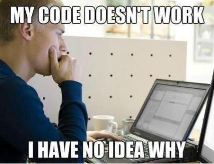
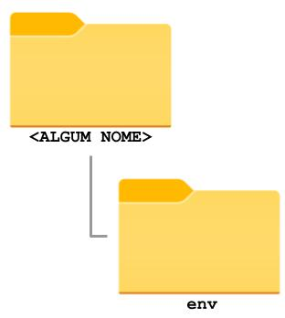
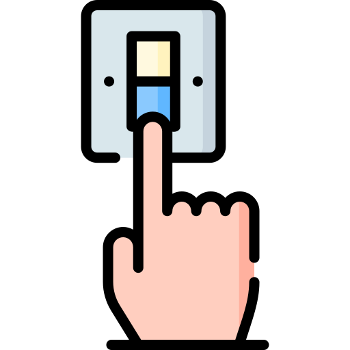

Ambientes virtuais em Python (venv)
Em Desenvolvimento Colaborativo Ágil, vocês aprenderam o conceito de gerenciamento de configuração. A ideia é essencialmente ter um conjunto de ferramentas que auxiliam o desenvolvedor a manter a configuração do projeto em um estado desejável. No nosso contexto isso quer dizer: a versão do Python, os pacotes instalados e as suas versões específicas.
{kind=link}
Depois de alguns semestres programando você já produziu uma quantidade razoável de projetos em Python. Quando vocês começaram a programar em Python, a versão mais recente era provavelmente o Python 3.7 ou 3.8. Atualmente estamos no Python 3.9 e o lançamento do Python 3.10 já está em um horizonte próximo. Qual o problema disso? Do ponto de vista do avanço da tecnologia isso parece ótimo! Mas pense nos seus projetos antigos. O que acontecerá com eles quando você atualizar a versão do Python no seu computador para uma versão mais recente que muda um comportamento ou remove uma função que você utilizava no projeto?
{kind=link}

O exemplo da versão do Python é um pouco mais drástico, mas e quanto às inúmeras bibliotecas/pacotes que você utiliza em cada projeto? Durante a graduação, os projetos são, na grande maioria, abandonados assim que você acaba o semestre. No mercado de trabalho você não poderá se dar a esse luxo: projetos antigos são em geral mantidos por bastante tempo.
Para resolver esse (e outros) problema, foram criados os ambientes virtuais (venv) do Python. Ele cria uma "nova instalação" do Python exclusiva para o seu projeto e os pacotes são instalados apenas nesse ambiente. Ou seja, quando você muda de projeto, basta mudar de ambiente virtual para usar uma instalação diferente, com um conjunto diferente de pacotes.
Outras linguagens de programação
Todas as grandes linguagens de programação atuais possuem algum tipo de ferramenta desse tipo (algumas melhores, algumas piores). Por exemplo, o NodeJS, que utilizaremos em um futuro próximo, não apenas faz o controle dos pacotes específicos de cada projeto, mas também avisa o desenvolvedor quando existe uma versão mais recente desses pacotes e sugere a atualização.
Criando um ambiente virtual
Para criar um ambiente virtual (venv), utilize o comando:
python3 -m venv NOME_DA_PASTA_DO_VENV
É comum utilizarmos nomes como env ou .env para o NOME_DA_PASTA_DO_VENV. Para Tecnologias Web, vamos padronizar o uso do nome env. Assim, o comando seria:
python3 -m venv env
Se o comando acima não funcionar
Caso o comando acima não funcione, tente o seguinte comando:
python -m venv env
Esse comando vai criar uma pasta chamada env dentro da pasta onde ele foi executado. Todos os arquivos necessários estarão dentro da pasta env.
{kind=link}

Apagando um venv
Se você não precisar mais do seu ambiente virtual (ou tiver criado no lugar errado), basta apagar a pasta env.
Ativando um ambiente virtual
{kind=link}

Será necessário ativar o ambiente virtual toda vez que você for trabalhar com ele. No começo isso pode parecer um pouco maçante, mas é apenas um comando e você logo vai se acostumar:
$ env\Scripts\Activate.ps1
$ env\Scripts\activate.bat
$ source env/bin/activate
Importante
Se você utilizar um nome diferente de env para o seu ambiente virtual, lembre-se de substituí-lo no comando acima. Por exemplo: se o seu ambiente virtual se chama meu-ambiente, o comando será source meu-ambiente/bin/activate (ou meu-ambiente\Scripts\activate.bat, no Windows).
Pronto! Agora quando você utilizar o Python nesse terminal, será utilizada a versão do ambiente virtual.
Importante
Para saber se o ambiente virtual foi ativado com sucesso, basta verificar se no terminal aparece o nome do ambiente virtual no começo da linha.
Importante
Os comandos acima ativam o ambiente virtual para aquela instância do terminal. Ou seja, se você abrir outro terminal, mesmo que seja na mesma pasta, você estará utilizando o Python do sistema.